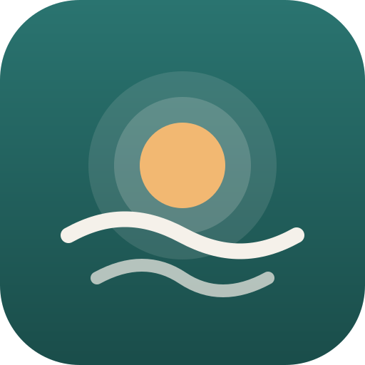

Atokvėpis
Įsigalioja / Effective: 2026-09-26
Privatumo politika
„Atokvėpis“ – anonimiška savipagalbos programėlė norintiems mesti, sumažinti ar padaryti pertrauką vartojant kanapes. Ši politika taikoma programėlei, įdiegtai iš „App Store“ ar „Google Play“, ir jos interneto versijai.
Kokius duomenis renkame
Jokių. Kūrėjas nerenka, negauna, nesaugo ir niekam neperduoda jokių tavo duomenų. Programėlėje nėra paskyrų, registracijos, reklamos, analitikos ar sekimo įrankių (įskaitant trečiųjų šalių) ir jokio serverio.
Kas saugoma tavo įrenginyje
Tai, ką įvedi programėlėje (pradžios data, vartojimo kiekis ir kaina, priežastys, dienoraščio ir trigerių įrašai, nustatymai), saugoma tik tavo įrenginyje (programėlės vietinėje saugykloje). Šie duomenys nesiunčiami į internetą.
- „Android“ programėlėje atsarginis kopijavimas į debesį ir duomenų perkėlimas į kitą įrenginį išjungti.
- „iPhone“ įrenginyje programėlės duomenys gali patekti į paties įrenginio atsarginę kopiją (pvz., „iCloud“ ar kompiuteryje), jei ją įjungei. Kūrėjas prie jos prieigos neturi.
Pranešimai
Priminimai ir pasiekimų pranešimai yra vietiniai: juos suplanuoja pats telefonas. Jie siunčiami tik jei juos įjungi ir suteiki leidimą. Jokie duomenys dėl to nesiunčiami į serverį. Pranešimus gali bet kada išjungti programėlės nustatymuose arba telefono nustatymuose.
Duomenų eksportas ir ištrynimas
Nustatymuose gali eksportuoti savo duomenis į failą (jį išsaugai ar bendrini pats) ir ištrinti visus duomenis. Ištrynus programėlę, jos duomenys ištrinami iš įrenginio.
Nuorodos į kitas svetaines
Skiltyje „Pagalba“ yra pagalbos linijų telefono numeriai ir nuorodos į jų svetaines. Jas atidarius, taikoma tų svetainių privatumo politika.
Vaikai
Programėlė skirta suaugusiesiems ir jokių duomenų, taip pat ir apie vaikus, nerenka.
Sveikatos informacija
Programėlė teikia bendrojo pobūdžio informaciją ir nepakeičia gydytojo konsultacijos. Ištikus pavojui gyvybei, skambink 112.
Pakeitimai ir kontaktai
Jei ši politika pasikeis, atnaujinta versija bus paskelbta šiame puslapyje.
Kūrėjas: Atokvėpis
El. paštas: jonas.alysas@gmail.com
Privacy policy
Atokvėpis is an anonymous self-help app for people who want to quit, cut down on, or take a break from cannabis. This policy applies to the app installed from the App Store or Google Play and to its web version.
What data we collect
None. The developer does not collect, receive, store, or share any of your data. The app has no accounts, no sign-up, no ads, no analytics or tracking tools (including third-party ones), and no server.
What is stored on your device
Everything you enter in the app (start date, amount used and price, your reasons, diary and trigger entries, settings) is stored only on your device, in the app's local storage. It is never sent over the internet.
- On Android, cloud backup and device-to-device transfer of the app's data are disabled.
- On iPhone, the app's data may be included in your device's own backup (e.g. iCloud or a computer backup) if you have enabled it. The developer has no access to such backups.
Notifications
Reminders and milestone notifications are local: they are scheduled by your phone itself, only if you turn them on and grant permission. No data is sent to any server for this. You can turn them off at any time in the app's settings or your phone's settings.
Exporting and deleting data
In Settings you can export your data to a file (which you save or share yourself) and delete all data. Uninstalling the app removes its data from your device.
Links to other websites
The "Help" section lists helpline phone numbers and links to their websites. When you open them, those websites' privacy policies apply.
Children
The app is intended for adults and does not collect any data, including from children.
Health information
The app provides general information and is not a substitute for medical advice. In an emergency, call 112.
Changes and contact
If this policy changes, the updated version will be published on this page.
Developer: Atokvėpis
Email: jonas.alysas@gmail.com